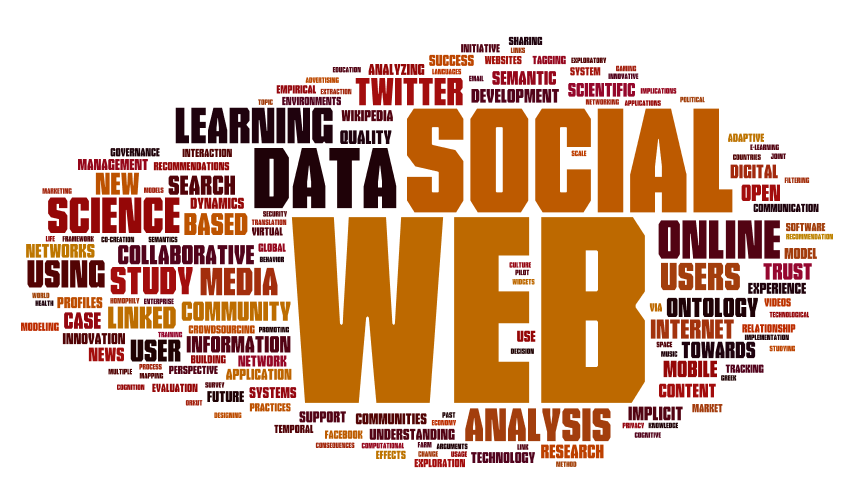
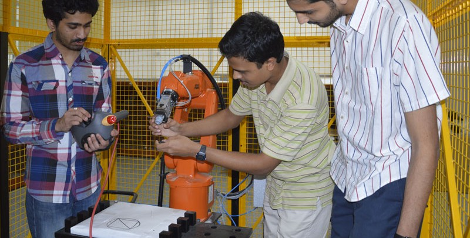
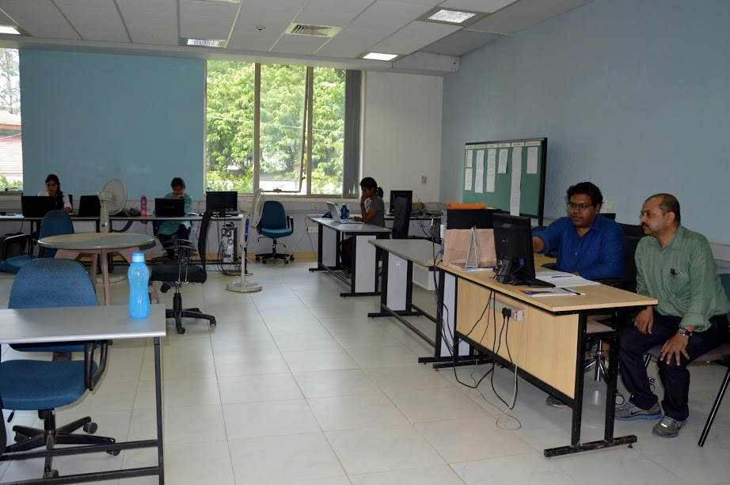

The M.Tech degree in Information Technology (IT) is intended to provide education for students who wish to work in the IT industry as practitioners. It is awarded upon successful completion of a 4-semester broad-based academic program in IT, going beyond, but incorporating essential elements of, traditional computer science.
Apart from imparting technical knowledge, the program teaches managerial and other cognate skills that are essential for a successful career in today's competitive IT industry. All students enrolled in the M.Tech program are residential, full-time students.
The M.Tech. program is a four semester program. The first three semesters of the program constitute academic course work. During the fourth semester, a student can either take up an industry internship or academic research at the institute leading to a thesis.
Computer ScienceData ScienceSoftware EngineeringNetworking and Communication
Computer Science
Starting from problem solving using computers, students of this stream learn concepts from a wide range of softwares.
Subjects of this stream include:
Theory Of Computation
Artificial Intelligence
Competitive Programming
Distributed Computing
Cryptography and Network Security
Design and analysis of Safety Critical systems
Mathematical Models of Computation
Theoretical Computer Sciences
Data Science
This submajor provides theoretical foundations of computing, information science, data structures and algorithms. Engineering issues like database design, data mining, information systems design and a comprehensive understanding of large information systems.
Subjects of this stream include:
Data Modeling
Data Analytics
Multi Agent Systems
Advanced Database Management Systems
Web Information Retrieval
Geographic Information Systems
Foundations of Big Data
Machine learning
Algorithms for Massive datasets
Software Engineering
This stream has a two-fold mission:
Firstly, to educate the students to be high quality software engineers, with strong hands-on experience and with strong foundations in computer science concepts.
Secondly, to contribute original and ground breaking ideas to the state-of-the art in SE by actively involving in research.
Subjects of this stream include:
Design Patterns
Usability
Software testing
Data Modeling
Automated Formal Verification
Geographic Information Systems
Networking and Communication
This stream covers a detailed understanding on various types of communication systems and protocols.
Subjects of this stream include:
Wireless Access Networks
Wireless Sensor networks
Internet Of Things
Digital Image Processing
Mobile computing with IMS Architecture
Computer Vision
Computer ScienceData ScienceSoftware EngineeringNetworking and Communication
Computer Science
Development of Operating System from Ground Up
The project involves the study of Assembly language for 8086 Architecture and aims to make the Operating System from scratch. This version of the project deals with the creation of the Boot loader which is built purely in assembly language. Due to the complex operations involved, the project was split into 4 stages which include developing the simple bootloader, analysis , addition of protection using concepts in invloved in "Ring" which represents the level of protection and control the program has over the system. This is followed by getting size of root directory, Getting the start address of root directory and loading FAT.
Tools used: Bochs Simulator, Virtual Floppy Drive, Naam Assembler
RFID based Library Automation System
A Library automation system built over open source library management application Koha that makes the library 24x7 accessible for the students of IIIT B. The fully functional primary system running over OSS-Koha with bar-code and Android application has been deployed at IIIT B library for a real-time use. RFID based automation is in the development stage. Expected to complete by July 2016.
Tools used: Android Studio, RFID, Koha - Open Source Integrated Library Management System
Fleet Management System
Scheduling the routes by minimizing the fleet in a given network
Tools used: eclipse IDE, struts2, j2ee, mysql work bench, apache tomcat server, java script, jquery, ajax, mysql, html, bootstrap, css
Automatic Number Plate Recognition on Smart Phones
The purpose of this project is to automate the traffic management. The project is developed for Android smart phones. In this project user will capture the image of a vehicle and it will detect the plate and then recognise the characters of that number plate. App uses cascade classifier for detecting the plate and tesseract ocr for character recognition.
VR Based Smart Board
In this application user can write on webscreen using his fingers without any additional hardware requirement other than a webcam.
Tools used: Python & Opencv
Volume Estimation of an Object in the Scene using Intel Real Sense
The main aim of the project is to estimate the volume of an object in the scene by capturing an image using the Intel Real Sense camera.
Tools used: Visual Studio, OpenCV, Intel SDK
Data Science
Temporal NoSql Data
The Project concerns with buidling a Temporal NoSql generic library. The NoSql database used is MongoDB. The temporal aspect is built over the MongoDb database.The temporal functions includes ASON(it will give the snapshot of data at given timestamp), Valid On(check where given data is valid on a particular date), Evolution(give evolution of the given column),etc.
Tools used: Eclipse, MongoDB APIs
Communication Spectrum Data Visualization Using D3.js
As part of the project, a website www.spectrumauction.tk was developed which provides the complete source of information about latest and historical information about spectrum holding, dynamics of spectrum prices during auction, subscriber base, the capacity of operator etc. This information is shown using beautiful and intuitive visualization tools.
Tools used: D3.js data visualization library, HTML javascript, JSON and CSV, GeoJSON
Spam detection on Twitter
Spam detection on Twitter is addressed on 2 levels: one is detecting a spam user given a user name and second is detecting spam tweets given a stream of tweets. Initially training data was collected from approximately 8000 users including their tweets (maximum 3000 tweets per user). Relevant features based on user profile and tweet content were extracted. On the basis of these features, classification is done about whether the given user is spammer or not.
Similarly, for tweets 2000 tweets were collected, features were extracted and classified. Classification analysis using various classifiers is also presented
Tools used: Python, NLTK(Natural language toolkit) 3.0, IDE-Eclipse
Information Convergence Platform
A middleware platform integrating producers and consumers processes for exchange and storage of data.
Tools used: Mulesoft Anypoint Dev Studio, MEL, Ubuntu 14 and Windows 10
Implementation of Machine Learning Algorithms in Embedded System
To implement and optimize various machine learning algorithms on embedded system (BeagleBone Black). Used Queuing Model for allocating buffer size for connectivity on embedded system. Till now, we have implemented reservoir and rejection sampling methods to make good samples out of a on-line data stream. Implementation of probabilistic counting for identifying distinct data from data stream.
Tools used: Beaglebone Black device,C
Akshaya
Akshaya is a generic framework which can be used to mine different type of semantic associations using cognitive modeling approach. The framework uses a co-occurrence graph to extract semantic associations using various graph operations. Mining latent semantic associations from text corpora, like Wikipedia articles, blogs, news articles, etc. is an important task and has several applications.
Tools used: Ruby
Identification of high density clusters for cell(polygon) based Traffic modelling
Extracting all possible points of interests and apply clustering algorithms to identify high density clusters.
These clusters will later be matched will mobile tower data to propose cluster based mathematical model for traffic."
Tools used: Python, Javascript(Leaflet/Mapbox)
Temporal XML
Imposing temporal features to XML Database. Inculcate the factor of time in XML Database
Tools used: eXistdb, java
ASL(American Sign Language)Translator
As a part of the project, an app has been developed which is for those who don't understand ASL. User can just hold the phone camera in-front of an ASL user and the app can decode it in form of a sentence.Based on 17 classes training data SVM classifier gets trained with HOG based approach and after predicting the correct result the app automatically writes the words on screen to form a sentence.
Tools used: OpenCV, Machine Learning, Python
Smart Admission
A Web portal where a student can not only apply to native universities but also to universities which are out of reach due to difference in semantics.By semantically linking the universities a student can apply to his choice of university irrespective of location , faculty , programmes etc.
REACH
The REACH project aims to develop solution to avail the provision for high speed Internet access in rural India using unlicensed TV white space spectrum and designing the Geolocation database for it. With the wide increase of population and use of Internet in India, the efficient utilization and management of spectrum is needed. The utilization of TV white space spectrum is emerging as a best alternative to fulfill this need since there are many unused channel in TV spectrum due to migration from analog to digital transmission technology.
Tools used: Many Worlds on a Frame (MWF) framework.
Information Convergence System(ICS)
This system will act as hub between data provider(author) and data consumer(reader). With the project acting as middleware, the author can upload data in any format and reader can read(or download) the data of choice in any format. If file/data type has been a bottleneck of the system being working in cross department manner ICS removes it and gives feel of homogeneous enterprise application
Tools used: Mongodb, python, pandas, bottle webframework for routing, mysql, json csv and excel file systems
Web Telescope
This project is under web - observatory in IIITB. Web telescope monitors data on social network (twitter as of now) to collect those data from social network a single application has been built which provides you an API through which you can access all top conversations given a specific search query (the direct REST api was not there by twitter officials and developers were demanding api like this since 2008)
Tools used: python, twitter api, tweepy, node.js
Analysis of Meetup.com
In this project, two problems have been addresses. First, a ranking system has been introduced among groups of similar interest based on their various characteristics, which in turn would help a user to make wise decision before joining the groups. Second, data generated by meetup.com has been analyzed to understand when and where new technology communities emerge and evolve.
Tools used: Meetup API, Python, Flask, D3.js
Building data model
A platform for civil engineers who can insert details about different buildings and can review that stored information.
Tools used: struts2, java, db4o
JSON-XML Mapper
An application to convert JSON to XML and XML to JSON.
Tools used: Java
Face Recognition using CNN
The project involves usage of Convolutional neural network for face Recognition task. Caffe framework is used for implementing CNN.
Tools used: Caffe, Python, AWS GPU Instance
Software Engineering
Universal API
Travelport Platform Services Project Universal API (uAPI) is the set of Web Services and APIs which are being developed on top of the Kestrel framework acquired by Travelport.
The Developed product will trigger service specific (Air /Hotel/Vehicle/Rail/Cruise) requests to individual GDS like Galileo (1G), Apollo (1V), Worldspan (1P), JAL (1J) and LCC adapter (Like ACH) and provide support to aggregate multiple distribution systems and low cost carriers.
After getting the request from User it goes to the appropriate GDS and fires multiple requests to the GDS as per the Service and stores the data in its Local Database and returns the cumulative data to the User.
Protype of eBay
Prototype of eBay was done by the usage of REST services to fulfill the basic requirements of a shopping site. The website contains plethora of features assisting workflows for multitudes of users categorized as admin, seller, buyer and guest. The services includes those offered by standard ecommerce sites such as selling / buying / status / tracking / rating / review / deals of goods of various types including electronics, books and other stationary goods.
Mobile App for Secure, Single Instance Document
An Android mobile application that allows a document to be received from a secure system, stored locally, and sent on to a secure system, with only one copy of the document existing (anywhere) at any one time. Once the document is sent from the mobile to the server, the local copy is deleted thus ensuring that only one copy exists.
Tools used: Android
Disaster Management App
The android app is to rescue people affected at the time of flood.There are three different components of the app,for affected person,volunteers (rescuer) and coordinator. On main activity the nearby rescue camps will be shown on the map.Google map APIs are used in the map.The affected person will generate a rescue request.Coordinator will assign the volunteer to that request, push notification will be sent to both volunteer and person. When rescue is done the volunteer will close the request.
Tools used: Android studio and Eclipse.
BLOOD HELP
An android application which uses Google Map API to show the hospitals and donors.
Tools used: Android Studio 2.0
Semantic Web- Smart Admissions
A common portal for both Universities and applicants(students) to find their matching i.e. Universities can register and login to find all the students who want to register for course which they are offering and students can find the matching universities which are offering the same course which they have applied.
IIITB SDC
The project is to develop a software center for then IIITB which will be used by the student of college. The project contains three component DevOps, Common Services and application services. DevOps is used to provide a Platform for communication between different team members. JENKINS is used continuous integration and version control. Maven is used to manage build, reporting and documentation of the project. Common Services is a rest service server which will store the data that will be stored by more than one applications and the student data. Application services are the different application merged into one application, the application will be related to the students for day to day work. Like SAC Election application in which student will only be allowed to cast vote one time in a given time period, after that result will be shown.
Tools used: Eclipse, Jenkins, Maven
Networking & Communication
Multipath load balancing using SDN
This project concerns with creation of fat tree topology. Progra ODL SDN controller has been used to balance the load using this topology.
Tools used: Mininet api for python, Opendaylight SDN Controller and RESTFUL API
Implementation of Open City Framework
Implementation of MWF framework for Open city using node.js. Open City is dealing with huge volume of data generated by IoT and its analysation. This leads to large data traffic generated on the Internet. To define access control mechanism to selected subsets of data for different application developers, the proposed solution is to use MWF framework built using node.js
Tools used: MEAN stack, eclipse, mongoDB, angularjs, nodejs
Sl No
Name
Specialization
Experience (Months)
1
Aamer Ramzan
Computer Science
2
Abhinav Anand
Data Sciences
3
Abhinav Shrivastava
Data Sciences
4
Aditi Raghuvanshi
Data Sciences
OFSS (32)
5
Aditya S
Data Sciences
Orvito India Private Ltd. (8)
6
Aditya Tiwari
Data Sciences
7
Akshay Jain
Data Sciences
8
Akshay Kumar
Data Sciences
9
Anamika Sharma
Data Sciences
10
Anand Naryanan
Computer Science
Accenture (40)
11
Anant Pratap Singh
Data Sciences
12
Aniket Kumar
Data Sciences
13
Anish Bhanushali
Data Sciences
14
Anjali Agarwal
Data Sciences
15
Anjani Kumar Jha
Data Sciences
Genpact Headstrong Capital Markets (20)
16
Ankit Gupta
Data Sciences
Wipro Technology (9)
17
Ankit Kumar
Data Sciences
18
Ankita Jaiswal
Data Sciences
IGATE global solutions ltd (28)
19
Ankita Sahu
Data Sciences
20
Ankur Gupta
Computer Science
TCS (32)
21
Anshuumaan Dwivedi
Computer Science
Accenture (8)
22
Anubhav Sharma
Data Sciences
23
Anuj Tomar
Computer Science
24
Anurag Sharma
Software Engineering
25
Anurag Hardikar
Data Sciences
Cognizant (13)
26
Anushree Joshi
Data Sciences
27
Anvita Vyas
Data Sciences
28
Arghya Bhattacharya
Data Sciences
Cognizant (47)
29
Arnaj Das
Data Sciences
30
Ashhadul Islam
Data Sciences
Cognizant (18)
31
Ashhar Iqbal
Computer Science
TCS (25)
32
Ashwini Anand
Computer Science
Mindtree ltd (30)
33
Avinash Kumar Chandrakar
Data Sciences
34
Bala Manoj
Data Sciences
35
Boggala Prabhakar
Data Sciences
36
Chodisetty Lakshmi Sirisha
Data Sciences
TCS (24)
37
Darshan Ramakant Bhat
Data Sciences
Tektronix India (12)
38
Shreyas Dawkhare
Data Sciences
Harbinger Systems Pvt. Ltd. (36)
39
Devesh Pandey
Data Sciences
40
Dhanesh Kothari
Data Sciences
41
Divyansh Gupta
Data Sciences
42
Firdous Bano
Data Sciences
43
Freeze Francis
Computer Science
CenturyLink Technologies Pvt. Ltd. (10)
44
Neelima Reddy
Data Sciences
Franklin Templeton investments (12)
45
Mahendra Garodi
Computer Science
NVIDIA Graphics Pvt. Ltd (24)
46
Grishma Ajmera
Data Sciences
Infobeans, Indore (22)
47
Bhavik Gujarati
Data Sciences
48
Harikrishnan C
Data Sciences
49
Hitesh Agrawal
Data Sciences
50
Janaki Vinesh Joshi
Computer Science
51
Kamini Gupta
Data Sciences
52
Keerthan Pai K
Data Sciences
Oracle India Private Limited (36)
53
Ketki Ranadive
Data Sciences
54
Kirti Sahni
Data Sciences
Appirio Inc (12)
55
Krishnapriya Mahajan
Data Sciences
56
Kriti Rajput
Data Sciences
57
Kritika Agarwal
Data Sciences
58
Kush Baronj
Data Sciences
59
Manish Kumar Choudhary
Networking
60
Manoj Batra
Data Sciences
Informatica Business Solutions Pvt. Ltd., Bangalore (24)
61
Mansi Goel
Data Sciences
Samsung (35)
62
Mayank Sharma
Data Sciences
Infosys (34)
63
Meenal Shukla
Data Sciences
Cognizant (6)
64
Mohammed Haroon D
Computer Science
Firetide Networks Pvt Ltd. (9)
65
Nallagatla Bharath Kumar
Data Sciences
66
Neha Mishra
Data Sciences
Cognizant (7)
67
Nishtha Bijalwan
Data Sciences
68
Palash Vijayvergiya
Data Sciences
69
Palvinder Kaur Bhatia
Data Sciences
70
Meghal Pandya
Data Sciences
71
Pankaj Kumar
Data Sciences
72
Pankhaniya Paresh
Computer Science
73
Piyush Panpaliya
Data Sciences
74
Peeyush Joshi
Data Sciences
HCL Tech. Ltd. (78)
75
Prachi Prakash Mahapatro
Computer Science
Capgemini (11)
76
Pradeep B Y
Software Engineering
TCS (34)
77
Praffulla Pandey
Data Sciences
78
Pragya Agarwal
Data Sciences
79
Prateek Goyal
Data Sciences
80
Priya Gupta
Data Sciences
Cognizant (11)
81
Priya Ranjan Sinha
Data Sciences
82
Priya Sancheti
Data Sciences
83
Priyanka Tiwari
Data Sciences
Linkites Pvt Ltd. (6)
84
Pulkit Aneja
Computer Science
85
Pushp Ranjan
Data Sciences
86
Sathyanarayana Ragineni
Data Sciences
TCS (12)
87
Rahul Kumar
Data Sciences
88
Raj Chitraxi Ajitsinh
Data Sciences
89
Rajakumar S
Data Sciences
Cognizant (18)
90
Ritika Dhami
Computer Science
91
Rohit Chouhan
Data Sciences
Aartek Software Solution Indore (24)
92
Bhargav Sridhar
Computer Science
Aruba Networks (6)
93
Praneeth Reddy Sita
Data Sciences
Cognizant (6)
94
Saikrishna Mundrati
Data Sciences
95
Sanat Jain
Data Sciences
96
Sanchit Pande
Data Sciences
97
Sandhya Rankireddy
Data Sciences
TCS (36)
98
Sanjeev Kumar
Computer Science
Infosys (40)
99
Saurabh Devgun
Computer Science
Infosys (31)
100
Sayyam Bhandari
Data Sciences
101
Shah Antriksh
Data Sciences
102
Shatroopa Saxena
Computer Science
103
Shishir Uniyal
Computer Science
104
Shubham Gupta
Data Sciences
105
Sneha R Hegde
Data Sciences
Robert Bosch (35)
106
Sonam Gupta
Data Sciences
107
Yash Soni
Data Sciences
108
Soumyadip Saha
Data Sciences
Radix Learning Pvt. Ltd. (14)
109
Sowmya Desai
Data Sciences
110
Subhas Das
Computer Science
Dynamic Digital Technology Pvt. Ltd. (36)
111
Sujit Kumar Muduli
Computer Science
112
Supromit Roy
Data Sciences
Allied Computer (66)
113
Surbhi Bakhtiyar
Data Sciences
114
Surbhi Bhattar
Computer Science
115
Sweta Kumari
Data Sciences
IBM India Pvt Ltd (13)
116
Swethlana Bhatt
Data Sciences
117
Sai Ranga Talari
Software Engineering
118
Tarun Jain
Computer Science
119
Ujjawal Saini
Data Sciences
120
Unadkat Dharamkumar Mukeshbhai
Data Sciences
TCS (14)
121
Bala Murali Krishna Uppalapati
Computer Science
Cognizant (9)
122
Vaibhav Dubey
Data Sciences
123
Ved Mathai
Computer Science
124
Venkata Sudhakar Reddy G T
Data Sciences
125
Vikas Kumar Pandey
Data Sciences
126
Vikas Ray
Data Sciences
127
Vikkurthi Manikanta
Data Sciences
TCS (17)
128
Vishal Neekhara
Data Sciences
129
Yerragunta Sindhu Priya
Data Sciences
TCS (24)
Computer Science
Web Sciences Lab

The Web Science Lab (WSL) at IIIT Bangalore focuses on building models to extract semantics and understand the impact of the web on different facets of human life. Typical research pursuits of WSL include the following:
Mining semantic associations from text and social media data
Building computational models for various socio-cognitive phenomena on the web (like formation of collective opinions, creation of celebrities, etc.)
Semantic integration of formal web data
Computational Sciences Lab

The Computational Sciences Lab at IIIT-B is interested broadly in the areas of Algorithms, Optimization, and Robotics.
Major focus areas include:
Robust optimization under uncertainty, with applications to supply chains, real time search, banking, smart grid, transportation, gaming and allied areas
Approximation algorims, machine learning, cryptography and linguistics, Visualization (scientific and information), high performance computing, computational geometry and topology
Electronic Design Automation including Statistical timing analysis and Optimization for Digital circuits, Power Analysis and Optimization, Formal Verification, Semiconductor manufacturing, Statistical Optimization, Combinatorial Optimization, Design and Analysis of Alogrithms
Electronics & Communication
HiDes Lab
The High Density Electronic Systems Lab at IIIT-B focuses on research and development in the area of high density and low dimensional electronics. The areas of research include 3D electronics, magnetic logic devices, interconnects, and antennas.
CEEMS Lab
The Center for Electronics and Embedded Systems (CEEMS) Lab's objective is to nurture talent by focusing on Embedded Computing, Wireless Communication and Computer Vision. CEEMS Lab collaborates with public and private organizations with the aim of bridging the gap between academic output and industry requirements, thus providing every learner an equal opportunity to become industry ready.
Networking & Signal Processing
Multi Modal Perception Lab
The Multimodal Perception lab focuses on human-centered sensing
and multimodal signal processing methods to observe, measure, and model human behavior. These methods are used in applications that facilitate behavioral training, and social media analysis; and enable human-robot interactions (HRI). The focus is mainly on vision and audio modalities. Probabilistic graphical models from the backbone of the
underlying formalism.
Wireless Network Lab

This lab focuses on research involving networking standards and technology. Current research work concentrates upon the latest broadband wireless access technology – WiMAX/LTE. Major areas of work include medium access control (MAC), QoS, QoE, power management, media independent handover (MIH).